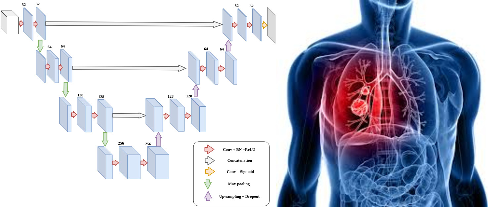
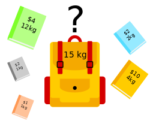
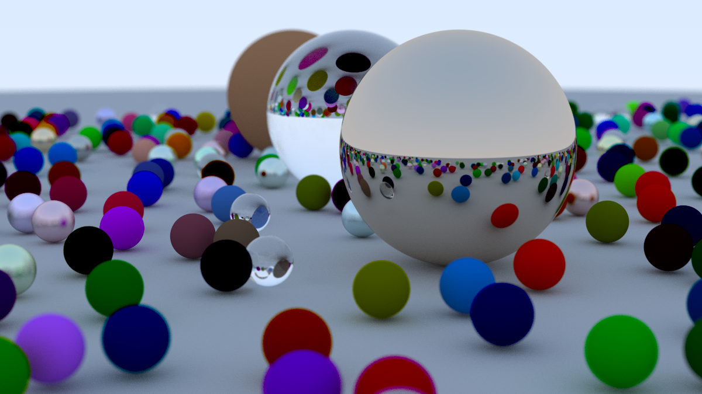
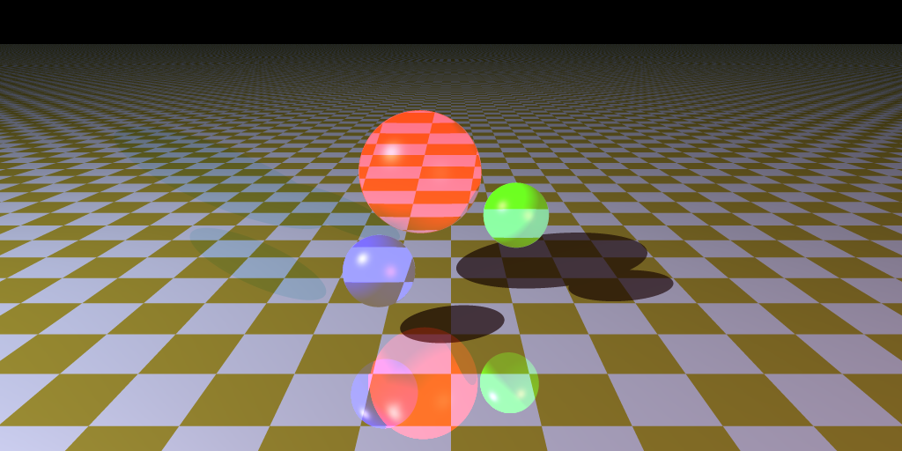
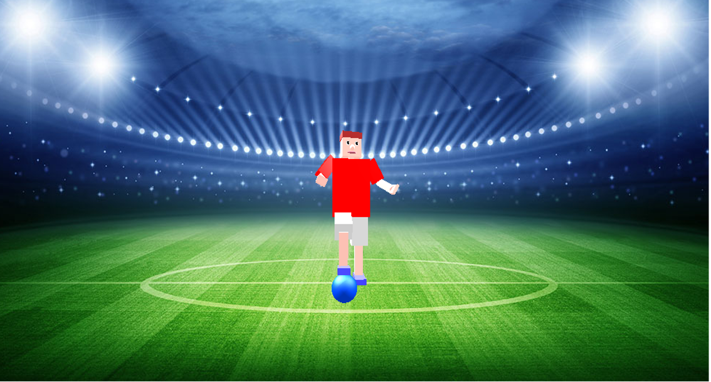
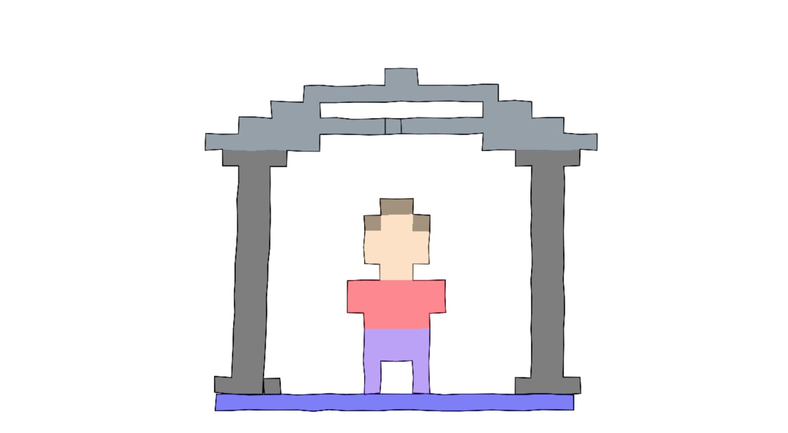
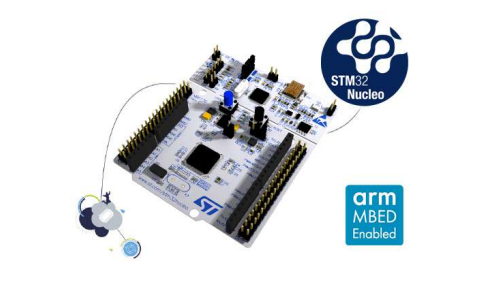

Software Engineer · Ph.D. Candidate · ÉTS Montreal
|
Applied ML · Logistics Optimization · Process Automation
Software Engineer and Ph.D. Candidate in AI at École de technologie supérieure (ÉTS) specializing in applied machine learning for logistics optimization and process automation. My research focuses on ML-driven methods to improve scheduling and resource allocation in construction supply chains.
Previously, I built and maintained production-grade tooling and pipelines in large-scale environments, as a Software Engineer at DNEG and a QA Engineer at Ubisoft Montreal.
Research Interests
Reinforcement Learning
Developing deep reinforcement learning agents for sequential decision-making in logistics and scheduling environments under uncertainty.
Operations Research
Applying mathematical optimization techniques to solve combinatorial problems in construction supply chains. Integrating AI-driven heuristics with classical methods for improved solution quality.
Logistics & Supply Chain Optimization
ML-driven methods to improve scheduling and resource allocation in construction logistics, focusing on process automation and workflow efficiency.
AI for Decision-Making
Designing intelligent systems that learn to make decisions under uncertainty, with applications in supply chain management, resource allocation, and real-time scheduling.
Publications
Hyperparameter Tuning for the Projected Gauss-Seidel Method in Rigid Body Simulations
École de technologie supérieure (ÉTS), Montreal, Canada, 2022
Proposed an automatic pipeline for tuning the hyperparameters of the projected Gauss-Seidel (PGS) iterative solver in interactive rigid body simulations.
Deep Learning Framework for Lung Cancer Tumor Segmentation from CT Scans
Mitacs Globalink Research Internship, Université de Moncton, Canada, 2019
Developed a 3D-UNet architecture for volumetric medical image analysis, achieving 92.1% sensitivity in lung cancer tumor detection from CT scans during research internship.
News
Started Ph.D. at ÉTS
Began doctoral studies in Artificial Intelligence at École de technologie supérieure, focusing on applied ML for logistics optimization.
QA Engineer at Ubisoft Montreal
Software testing and tooling for game development workflows.
Software Engineer at DNEG
Developed tools and infrastructure for visual effects production pipelines.
Completed M.A.Sc. at ÉTS
Defended thesis on hyperparameter tuning for the projected Gauss-Seidel method in rigid body simulations.
Mitacs Globalink Research Internship
Conducted deep learning research on medical image segmentation at Université de Moncton, developing 3D-UNet architectures for lung cancer detection.
Education
Ph.D. in Artificial Intelligence
École de technologie supérieure (ÉTS)Research Focus: Reinforcement Learning and Operations Research for Combinatorial Optimization
M.A.Sc. in Information Technology
École de technologie supérieure (ÉTS)Thesis: Hyperparameter tuning for the projected Gauss-Seidel method in rigid body simulations
B.Eng. in General Engineering
Tunisia Polytechnic SchoolPreparatory Classes (Mathematics–Physics)
Tunis Preparatory Engineering Institute (IPEIT)Professional Experience
QA Engineer | Software Testing & Tooling
2024 – 2025Ubisoft Montreal
Conducted rigorous testing of editor builds and internal tools. Collaborated with software engineers and artists to reproduce critical issues, prioritize fixes, and improve overall software stability.
Software Engineer | Tools & Infrastructure
2022 – 2024DNEG
Developed tools for industry-standard software including Maya, Clarisse, Houdini, and Nuke. Collaborated with artists and technical directors to enhance DCCs and proprietary tools.
Teaching Assistant
2021École de technologie supérieure (ÉTS)
Course: GTI320 Mathematical Programming (2 sessions). Presented assignments, answered questions on computer graphics and C++ debugging, and graded assignments.
Mitacs Globalink Research Intern
Summer 2019Université de Moncton
Developed a convolutional neural network (U-Net architecture) for 3D semantic segmentation of lung CT scans to detect tumors. Collaborated with the research team to secure first place in an industrial problem-solving competition.
Technical Expertise
Certifications
Python for Data Science, AI & Development
CourseraPython Project for Data Science
CourseraMachine Learning
CourseraGetting Started with Git and GitHub
CourseraSelected Projects
Artificial Intelligence & Machine Learning

Medical Image Segmentation with Deep Learning
Developed a 3D-UNet framework for lung cancer tumor segmentation from CT scans during a Mitacs Globalink research internship at Université de Moncton (2019). Achieved 92.1% sensitivity in tumor detection.

Evolutionary Algorithms for Combinatorial Optimization
Implemented genetic algorithms for solving the Knapsack Problem, exploring evolutionary computation techniques including selection, crossover, and mutation operators.
Computer Graphics & Simulation

Ray Tracer from Scratch
Personal exploration of ray tracing fundamentals through a C++ implementation following Peter Shirley's Rendering series. Features CPU-based rendering with multiple material types.

Advanced Ray Tracing Renderer
CPU-based ray tracing renderer in Java with OpenGL integration. Features geometric primitive intersection, anti-aliasing, depth of field, and texture mapping.

Physics-Based Character Animation
Physics-based animation system using Proportional-Derivative (PD) controllers. Simulates a skeletal puppet suspended by virtual marionette strings in Java/OpenGL.

Finite Element Method Simulation
2D finite element method simulation for deformable bodies with implicit backward Euler time integration for numerical stability.
Embedded Systems

Smart Irrigation System
IoT-based smart irrigation system using temperature, humidity, and luminosity sensors. Implemented in C on an STM32F302R8 microcontroller.
Contact
I am always open to research collaborations, academic discussions, and opportunities. Feel free to reach out.